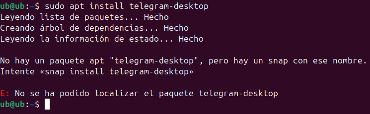

Instal·lació d'aplicacions per la terminal
Instal·lació amb snap i apt
Instal·lació amb snap
Primer per instal·lar una aplicació dels repositoris és només fer la següent comanda. 
Com podem veure no s'ha descarregat dels repositoris perquè no té el paquet però si fem sudo snap install telegram-desktop es descarregarà ara ho faré.

Com podem veure s'ha instal·lat.

Instalació amb apt
I tornem a fer la comanda sudo apt install FileZilla.

I aquí ho tenim fet.

Instalació amb wget
Per descarregar amb wget hem de tindre el enllaç del arxiu i descarregar-lo.

I per instal·lar fem servir la comanda sudo dpkg -i fitxer.deb.


Esta obra está marcada con CC0 1.0